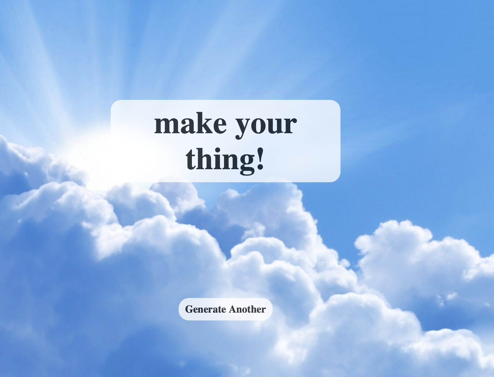
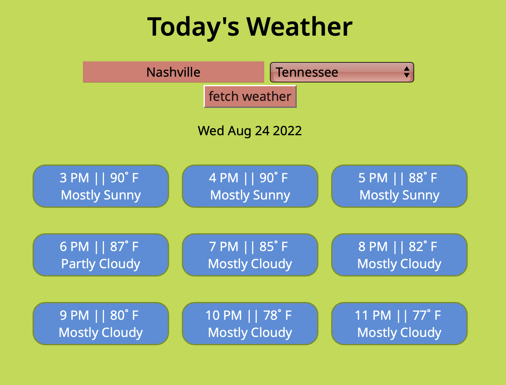

About me
My name is Kainen White. I am a frontend web developer based in Nashville, Tennessee. I build custom websites which are aesthetic, responsive, interactive and accessible. Over the past year, I have developed strong skills in HTML, CSS and Javascript. I am also familiar with web hosting, JS testing with mocha, Wordpress, git and GitHub. Feel free to reach out.
My projects
Savings Calculator

This is a web application designed with HTML, CSS, and Javascript. The user inputs income and expenses, and the Javascript calculates how much remains and displays the result. All of the information is processed in the browser with no communication of personal data to a server.
MotiQuotes

This motivational quote generator is built with Javascript, CSS and HTML. I used Python to pull and save 12,000 motivational quotes from goodreads. Then, it found the words mentioned more than 500 times and saved them to a new javascript file. It currently selects between 3 sentence structures, but I plan improve and expand them soon.
Weathered

This React weather app is in the wee early stages of development. It gets data from two apis: api.weather.gov and geocode.maps.co It fetches the latitude and longitude of an address, then fetches an hour-by-hour forecast for the next 7 days. It then filters, formats, groups by day and displays the results.